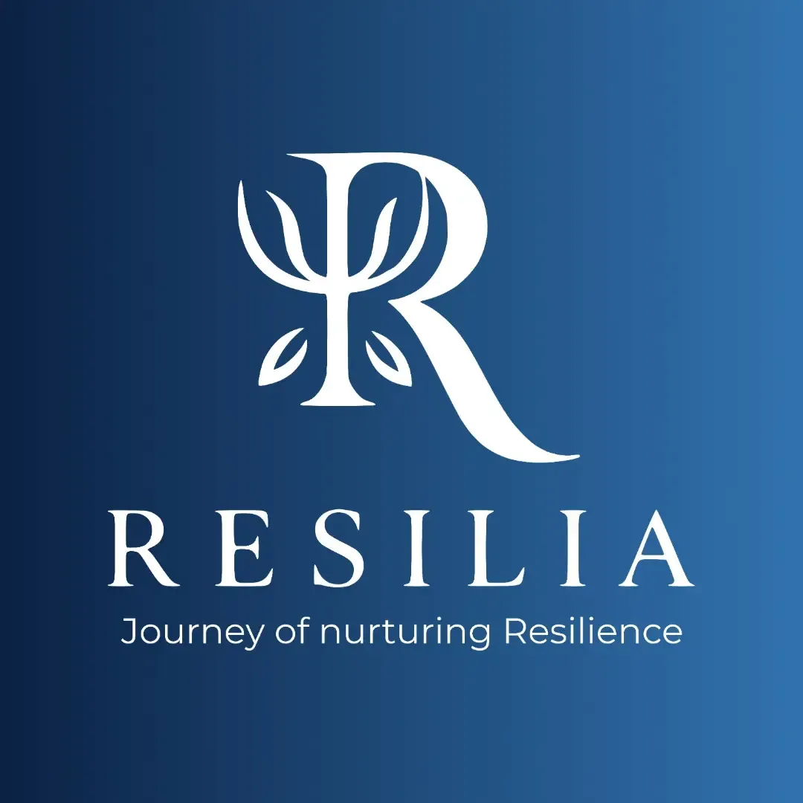
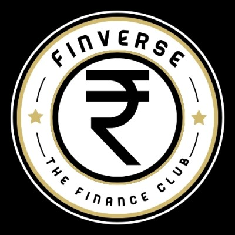

Opening hooks
Start with a clear visual or idea that gives people a reason to keep watching.
Retention StrategyI bring creative marketing together with finance and analytics to understand both how businesses earn attention and how they create value. On my personal Instagram page in 2025, I reached 117,000 verified followers and reported 70M+ organic views.
These figures are from my personal Instagram page in 2025: 117K verified followers and 70M+ reported organic views. The view figure is reported separately from the verified follower count.
A personal-page result from 2025; the follower figure is verified.
Illustrative pathway only · no quarterly breakdown is available
Reported views on the personal Instagram page in 2025. This figure is distinct from the verified follower count.
Start with a clear visual or idea that gives people a reason to keep watching.
Retention StrategyMake each frame useful and keep the pacing aligned with the idea.
Watch Time OptimizationMake information useful and distinctive enough that people may choose to share it.
ShareabilityEach project shows a different kind of marketing work: building a psychologist’s brand, growing a personal audience, supporting institutional marketing, and assisting with business development.

Built a psychologist's brand from scratch: defined brand positioning, designed logo and tagline, crafted empathetic copy, and designed and developed the live responsive web platform.
Personal Instagram page: 117K verified followers and 70M+ reported organic views in 2025.
INVESTMENT MANAGEMENT · BRAND MARKETING
Conducted competitor research for marketing priorities, supported research-based content topics for community SEO on Reddit & Quora, supported WhatsApp communications, and maintained Excel trackers.

Directed social media marketing campaigns boosting brand awareness and engagement. Planned finance-education content, coordinated workshop promotions, and ideated student engagement strategies.
B2B OUTREACH & PARTNERSHIP RESEARCH
Researched competitor platforms and potential employers. Supported stakeholder outreach, lead tracking, and partnership research.
Commitment to Integrity: All project descriptions and metrics reflect verified responsibilities and documented achievements from my CV. No engagement rates, conversions, or revenue figures are manufactured.
Creative work earns attention. Research and evidence help direct it toward lasting business value.
I understand the audience, the business, and the numbers. My approach combines creative execution with research, financial-market awareness, and data-driven thinking to understand not just how brands attract attention, but why businesses create value.
Marketing shows me how businesses earn attention.
Finance helps me understand how they create value.
Find the real problem, not just what is easy to post.
Develop a differentiated voice and positioning angle.
Build scroll-stopping assets that respect audience attention.
Engineer organic discovery and algorithmic amplification.
Read the true signal, separating vanity from impact.
Double down on winning angles and eliminate what underperformed.
From creative concepts to data analysis, I work across the marketing stack. Grounded in practical execution, audience research, financial-market understanding, and quantitative decision modeling.
Crafting distinct brand identities, narrative taglines, and messaging frameworks that make a brand unmistakable in crowded markets.
Positioning, identity, tagline, and responsive web copy brought together as one brand experience.
Planning and creating audience-focused content, with practical experience growing a personal Instagram page.
In 2025, the page reached 117,000 verified followers and reported 70M+ organic views.
Mining competitor moves and search queries to build organic discoverability on conversational search engines and community hubs.
Competitor research informed priorities, while research-based Reddit and Quora topics supported community discovery.
Applying analytical rigor through spreadsheets, databases, and code to evaluate campaign performance and uncover actionable audience trends.
Excel content trackers, Power BI reporting, and Python or SQL analysis connect information to clear next steps.
A chronological history of real-world roles spanning investment management, student-led media clubs, B2B business development, and commercial graphic design.
Supported institutional brand-awareness and marketing initiatives through market research, community discoverability, and structured content operations.
Led social media campaigns and finance-education content, and supported promotion of club events and workshops.
Supported B2B market research, employer outreach, lead tracking, and partnership research.
Produced promotional creative assets and digital graphics ensuring visual consistency across digital touchpoints.
M. L. Dahanukar College of Commerce
Rigorous academic grounding in equity markets and IPO dynamics, public market behavior, private equity concepts and business models, investment research, valuation fundamentals, commercial positioning, and quantitative decision support.
R.A. Podar College of Commerce & Economics
Specialized in commercial fundamentals, business economics, financial accounting, and organizational communications.
Looking for someone who connects creative vision with commercial execution? Whether you need to define brand positioning from the ground up, build an organic audience engine, or ground marketing decisions in data and financial-market awareness — let's have a conversation.